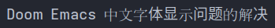
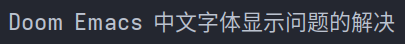

Doom Emacs中文字体显示问题的解决
Ping Zhou, 2022-07-03
问题
Doom Emacs 别的都挺好，就是有个奇怪的小问题，在显示中文的时候，会出现下面这样字体不一致的情况：

可以看到，同一行文字里的中文字符，它似乎用了不同的字体来显示，导致显示出来的文字大小样式不一，显得很奇怪。这种情况，我在以前的 Emacs 配置里没有遇到过，感觉似乎是 Doom 里某些编码没有指定字体？
解决
开始我以为只是 org-mode 的问题，后来发现，这个问题在其他模式（例如代码注释）里也存在，因此是 Doom Emacs 本身的问题。
经过一番研究，找到这个帖子： https://emacs.stackexchange.com/questions/63850/doom-emacs-how-to-align-chinese-characters-in-org-tables
这个帖子是关于 org-mode 表格显示的，但其中对中文字体的设置也有借鉴意义：我们可以用 set-font-set 这个函数，对指定的字符集设置字体。
(defun pz/setup-cjk-fonts ()
(interactive)
(if (display-graphic-p)
(dolist (charset '(kana han cjk-misc bopomofo))
(set-fontset-font (frame-parameter nil 'font)
charset (font-spec :family "Noto Sans Mono CJK SC")))))
set-font-set 函数的定义如下：
(set-fontset-font NAME TARGET FONT-SPEC &optional FRAME ADD)
第一个是要设置的窗口参数，我们用 frame-parameter 加 nil 可以获取当前窗口的字体参数。然后对这个参数，设置各个字符集的字体。这里字符集参数 charset ：
- 可以是字符集名称（例如 chinese-gbk，可以通过命令
list-character-sets查看）； - 也可以是 script symbol，可以查看变量
script-representative-chars获取所有的 script symbol 名字。 - 也可以是单个字符，即为单个字符指定字体；
- 如果是 nil，则表示给所有未设置字体的字符集设置字体。
对我来说，就是给 CJK 字符集设置中文字体，这里用的是 script symbol，包括 kana, han, cjk-misc, bopomofo 这几个。
我用的是 Noto Sans Mono CJK SC 字体，也可以用 describe-font 命令来查看系统里已安装的其他字体（用 CJK 关键字搜索），选一个顺眼的来用。
然后在启动的时候，调用这个函数设置 CJK 字体即可。保险起见，我还把它加到了 org-mode-hook 里。
问题解决！现在中文显示顺眼多了：
